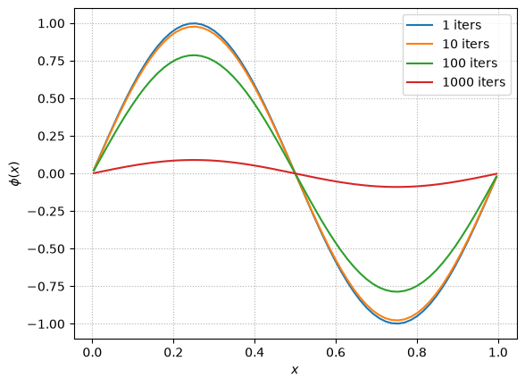
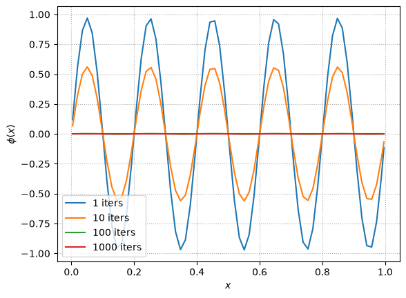
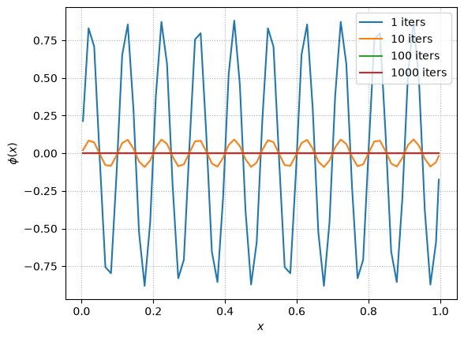
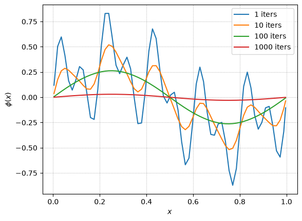
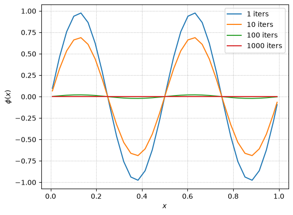
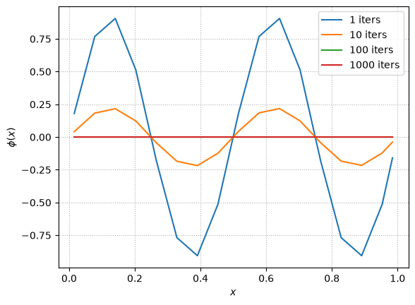
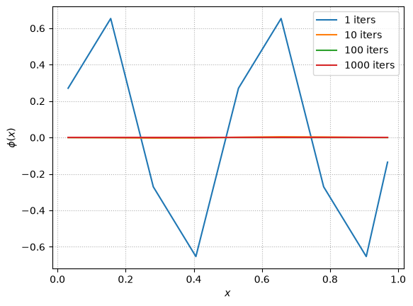

Behavior of Single Modes#
Smoothing takes a long time to converge to the solution. To understand why this is, we will look at the behavior of a single frequency mode under relaxation. We’ll use the Laplace equation:
on \([0, 1]\) with homogeneous BCs as our test case.
Tip
The solution to this is trivial—\(\phi = 0\).
So if we initialize the solution with a single-frequency sine way, and smooth a bit, we can compute the error easily.
We’ll combine the grid class and our relaxation / residual functions into a single PoissonRelaxation class,
which is provided by a module we can import: smoothing.py
import numpy as np
import matplotlib.pyplot as plt
import smoothing
We’ll set our initial conditions like
where \(m\) is an integer.
Convergence of different modes#
Let’s see how different modes behave. We’ll write a function that makes a plot of the solution after several different numbers of iterations
def single_mode_comparison(m=1, nx=128):
g = smoothing.PoissonRelaxation(nx)
fig, ax = plt.subplots()
for niter in [1, 10, 100, 1000]:
# initialize
g.phi[:] = np.sin(2*np.pi*m*g.x)
# smooth
g.relax(tol=None, max_iters=niter)
ax.plot(g.x[g.ilo:g.ihi+1], g.phi[g.ilo:g.ihi+1],
label=f"{niter} iters")
ax.legend()
ax.set_xlabel("$x$")
ax.set_ylabel("$\phi(x)$")
ax.grid(ls=":")
return fig
<>:18: SyntaxWarning: "\p" is an invalid escape sequence. Such sequences will not work in the future. Did you mean "\\p"? A raw string is also an option.
<>:18: SyntaxWarning: "\p" is an invalid escape sequence. Such sequences will not work in the future. Did you mean "\\p"? A raw string is also an option.
/tmp/ipykernel_4020/653856055.py:18: SyntaxWarning: "\p" is an invalid escape sequence. Such sequences will not work in the future. Did you mean "\\p"? A raw string is also an option.
ax.set_ylabel("$\phi(x)$")
Let’s look at the behavior of \(m=1\)
fig = single_mode_comparison(m=1)

We know that the solution is just \(\phi = 0\), so any departure from that is error. Even after 1000 iterations we can still see the sine behavior of the initial guess, so this is converging very slowly.
What about a higher mode? \(m = 5\)
fig = single_mode_comparison(m=5)

This converges much faster! After 100 iterations, it is hard to see the departure from \(\phi = 0\)
What about \(m = 10\)?
fig = single_mode_comparison(m=10)

This converges really fast!
Important
What we are observing is that short wavelength noise (in terms of the number of zones across the wavelength) converges faster than long wavelength noise.
Elements of Multigrid#
We want to take advantage of the fact that long wavelength modes take a long time to relax away while the short wavelength modes relax very quickly.
Note
For this problem, any non-zero \(\phi\) is the error, and since the Poisson equation is linear, so we can decompose \(\phi(x)\) into its Fourier modes and what we observed above tells us that the short wavelength error modes will go away quickly (few smoothing iterations) while the long wavelength error modes will take much longer to relax away.
To see this, lets seed all 3 modes and look at how they relax:
g = smoothing.PoissonRelaxation(128)
fig, ax = plt.subplots()
for niter in [1, 10, 100, 1000]:
# initialize
g.phi[:] = 1./3. * (np.sin(2*np.pi*g.x) +
np.sin(2*np.pi*5*g.x) +
np.sin(2*np.pi*10*g.x))
# smooth
g.relax(tol=None, max_iters=niter)
ax.plot(g.x[g.ilo:g.ihi+1], g.phi[g.ilo:g.ihi+1],
label=f"{niter} iters")
ax.legend()
ax.set_xlabel("$x$")
ax.set_ylabel("$\phi(x)$")
ax.grid(ls=":")
<>:19: SyntaxWarning: "\p" is an invalid escape sequence. Such sequences will not work in the future. Did you mean "\\p"? A raw string is also an option.
<>:19: SyntaxWarning: "\p" is an invalid escape sequence. Such sequences will not work in the future. Did you mean "\\p"? A raw string is also an option.
/tmp/ipykernel_4020/1330619009.py:19: SyntaxWarning: "\p" is an invalid escape sequence. Such sequences will not work in the future. Did you mean "\\p"? A raw string is also an option.
ax.set_ylabel("$\phi(x)$")

After 10 iterations, only the 2 longest wavelength modes persist and after 100, only the m = 1 mode survives.
Tip
The multigrid method exploits this behavior by recognizing that a long wavelength error on the original grid will have a shorter wavelength on a coarser grid (in terms of number of zones across a wavelength).
So multigrid coarsens the problem to accelerate the convergence of long wavelength errors.
To see this, let’s look at an \(m=2\) mode at several different grid resolutions.
fig = single_mode_comparison(m=2, nx=64)

fig = single_mode_comparison(m=2, nx=32)

fig = single_mode_comparison(m=2, nx=16)

Notice that with 64 zones, the \(m=2\) mode takes a long time to smooth away. But as we make the grid coarser, that same mode smooths away much faster. On the coarse grid, its wavelength, in terms of number of zones, is smaller, so fewer iterations are needed to communicate across the mode.
To build a multigrid algorithm we need a way to coarsen our problem and then bring what we learned on the coarse grid back up to the fine grid. We’ll work on that next.